On this page
What Is the Legacy Collection?
The Sims Legacy Collection is the 2025 re-release of the original The Sims (2000) and all seven expansion packs, in a single digital purchase. Released January 31, 2025 on Steam, EA App, and Epic Games Store. It is digital only – no physical or boxed edition was released. It replaces the older Complete Collection as the standard way to buy the original game new.
History of The Sims 1 Releases
| Year | Release | EP Icon | Notes |
|---|---|---|---|
| 2000 | The Sims (base game) | 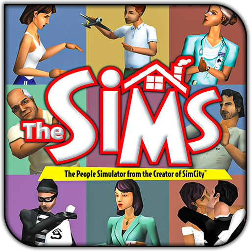 | Original release. Base game only. Hard limits: 200 objects/category, 90 walls, 63 floors. |
| 2000 | Livin' Large (EP1) | 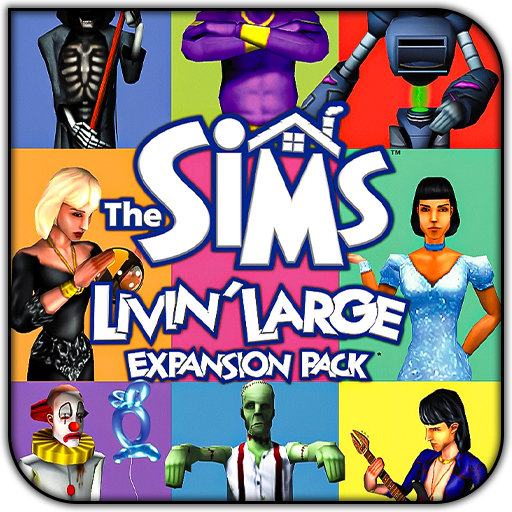 | New objects, careers, NPCs. Raises wall and floor CC caps to 65,000. |
| 2001 | House Party (EP2) | 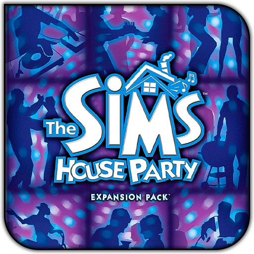 | Party system, costume trunk, entertainment objects. |
| 2001 | Hot Date (EP3) | 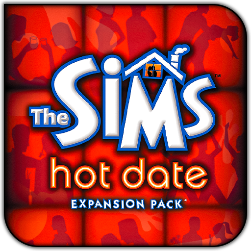 | Downtown lots, clothing racks. Introduces buyable skins – L, F, S filename prefixes. |
| 2002 | Vacation (EP4) | Vacation islands. Winterwear (W prefix) buyable skins. | |
| 2002 | Unleashed (EP5) | 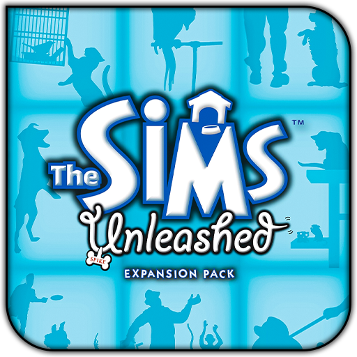 | Pets, outdoor gardening, neighbourhood editing. Raises build mode object limit to 2,000. |
| 2002 | Deluxe Edition | 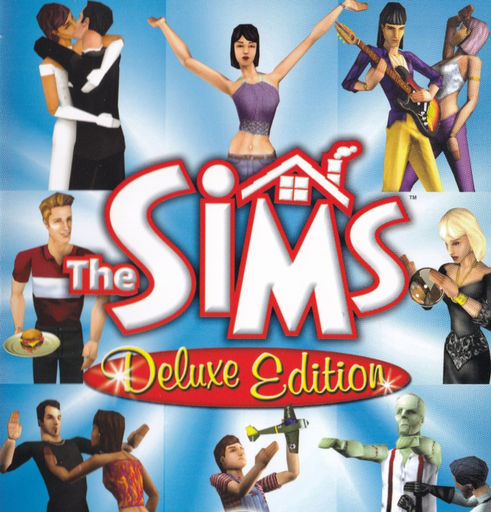 | Base game + Livin' Large + The Sims Creator tool + exclusive Deluxe content (25+ objects, 50+ skins). Replaced standalone base game in retail. |
| 2003 | Superstar (EP6) | 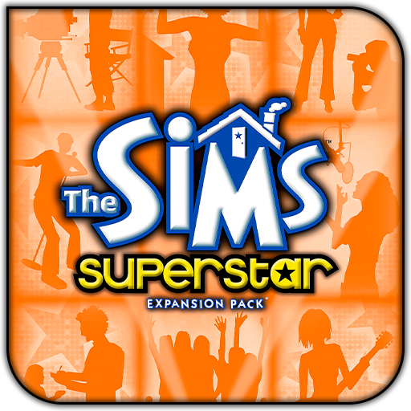 | Celebrity system, Studio Town. High Fashion (H prefix) buyable skins. |
| 2003 | Double Deluxe | 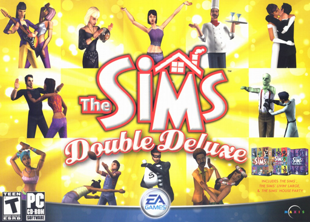 | Deluxe Edition + House Party + The Sims Creator + bonus disc with exclusive African and Asian-themed content. |
| 2003 | Makin' Magic (EP7) | 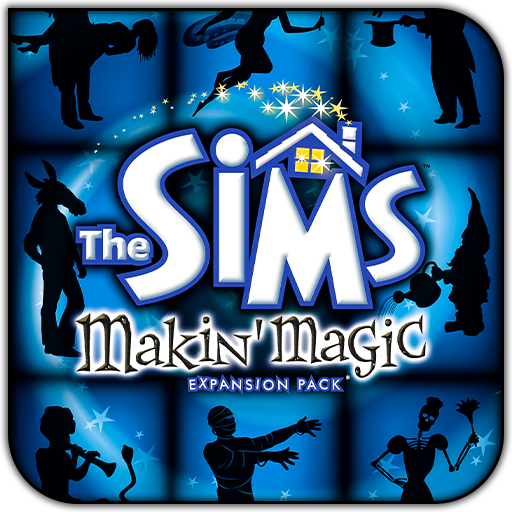 | Magic system, spells, baking. Final expansion pack. |
| 2004 | Mega Deluxe | 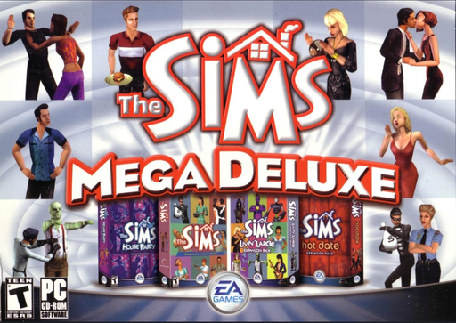 | Double Deluxe + Hot Date. North America only. Released on Mac as "The Sims: Party Pack". |
| 2004 | Triple Deluxe | 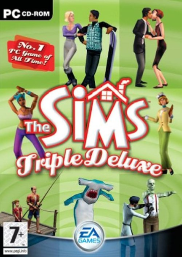 | Double Deluxe + Vacation. UK and Ireland only. |
| 2004 | Full House | 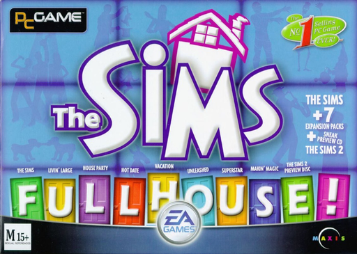 | Base game + all 7 EPs. Australia, New Zealand and South Africa only. |
| 2005 | Complete Collection | 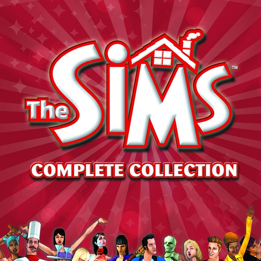 | Retail boxed set with base game + all 7 EPs + Deluxe and Double Deluxe bonus content + The Sims Creator. Common in old forum posts as "TCC" or "CC". Mods made for this version work in Legacy with path adjustments. |
| 2025 | Legacy Collection | 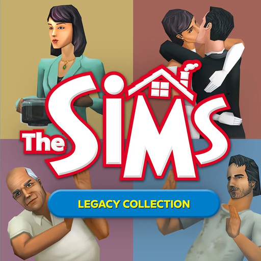 | Digital re-release for Windows 10/11. Vulkan renderer, new save location, no registry entries. All 7 EPs + Deluxe/Double Deluxe bonus content included. |
EP icons: Legacy Collection and Complete Collection icons sourced from IGN. Compilation box art from MobyGames, Internet Archive, and Amazon. All other EP icons by sairitvs on DeviantArt ↗.
Expansion Pack Folder Reference
Which folder number is which pack
When mod readmes say to put files in "ExpansionPack4" or similar, here's what each number means. These folder names are identical in both Steam and EA App installs.
| Folder | Expansion Pack | Key modding notes |
|---|---|---|
| ExpansionPack1 | Livin' Large | Raises wall and floor CC limits from base game caps to 65,000 |
| ExpansionPack2 | House Party | Costume trunk objects, party system |
| ExpansionPack3 | Hot Date | Introduces buyable skins – L, F, S filename prefixes. Clothing racks on Downtown lots |
| ExpansionPack4 | Vacation | Winterwear (W prefix) buyable skins. Vacation island lots |
| ExpansionPack5 | Unleashed | Raises build mode object limit to 2,000. Pet skins and neighbourhood editing |
| ExpansionPack6 | Superstar | High Fashion (H prefix) buyable skins. Studio Town lots |
| ExpansionPack7 | Makin' Magic | Magic objects, baking items, final expansion |
| ExpansionShared | Shared assets | Contains SkinsBuy\ folder for L/F/S/W/H prefix buyable clothing |
| GameData | Base game data | Contains Skins\, Walls\, Floors\, Objects\, Roofs\ subfolders |
Technical Changes vs the Original
What actually changed under the hood
C:\Users\%USERPROFILE%\Saved Games\Electronic Arts\The Sims 25\. On first launch the game copies the default neighbourhood templates there. Steam Cloud saves are not supported – back up this folder manually if you play on multiple machines.C:\Users\%USERPROFILE%\Saved Games\Electronic Arts\The Sims 25\ manually before reinstalling or switching machines. Some mods write data to save files permanently, so keeping a backup is especially important.edit_char debug cheat by patching the game in memory at runtime – it does not permanently modify any files. Run Sims1LegacyHacks.exe before launching the game each session and keep it open while you play. Works on both Steam and EA App versions – no Steamless required. See the Must-Have Mods page.-skip_intro launch flag has no effect since there is no intro to skip. A Reddit workaround exists to manually restore the intro video for the Complete Collection version, but this does not work with Legacy Collection – EA changed something in the exe that prevents it.System Requirements
| Component | Requirement | Notes |
|---|---|---|
| OS | Windows 10 or Windows 11 (64-bit) | Does not run on Windows 7, 8, Vista or XP |
| GPU | Vulkan-compatible GPU | NVIDIA GTX 600+, AMD GCN (7000/R series)+, Intel Iris Xe. Most GPUs from around 2012 onwards. Check your GPU's Vulkan support at vulkan.gpuinfo.org |
| GPU drivers | Up to date | Outdated drivers are the most common cause of Vulkan errors – update before troubleshooting anything else |
| RAM | 4 GB | The original game used very little memory by modern standards |
| Storage | ~5 GB | Plus mods and CC – keep Downloads folder under 2.5 GB |
| Platform | Steam, EA App, or Epic Games | Digital only, no disc version |
| Steam Deck | Supported | Community reports consistently positive – game runs well on Deck |
EA Patch History
Official patches released since launch
| Date | Patch | Key changes |
|---|---|---|
| 4 Feb 2025 | 1 / 2 | Emergency stability patch. Fixed game closing immediately at launch, Alt+Enter crash, travel screen garbling, crash when saving in non-default neighbourhood. |
| 6 Feb 2025 | 3 | Further stability work. Vulkan error now shows a message instead of crashing silently. More driver compatibility improvements. |
| 12 Feb 2025 | 4 | Additional crash fixes, window management improvements. |
| 20 Feb 2025 | 5 | Stability pass. GPU compatibility notes added to EA help documentation. |
| 27 Feb 2025 | 6 | Further stability fixes. |
| 14 Mar 2025 | 7 | Major update – in-game resolution options added, fractional scaling overhauled (renders at next integer scale up), window freely resizable, portrait camera fix, game-minimises-when-unfocused bug fixed. |
| 3 Apr 2025 | 8 | Stability improvements, Sim portrait camera position fix, warning added for Windows usernames with special characters that cause save path crashes. |
Missing Official Maxis Content
The "Get Cool Stuff" downloads not included in Legacy
Between 2000 and 2003, Maxis ran a "Get Cool Stuff" section on the official Sims website with free downloadable objects, skins, tools and houses. Most of this was not included in Legacy Collection – either because licenses expired (branded objects) or it was simply not bundled. The community has archived all of it and made it Legacy-compatible.
Downloads\, skins to GameData\Skins\ etc. No installer needed.